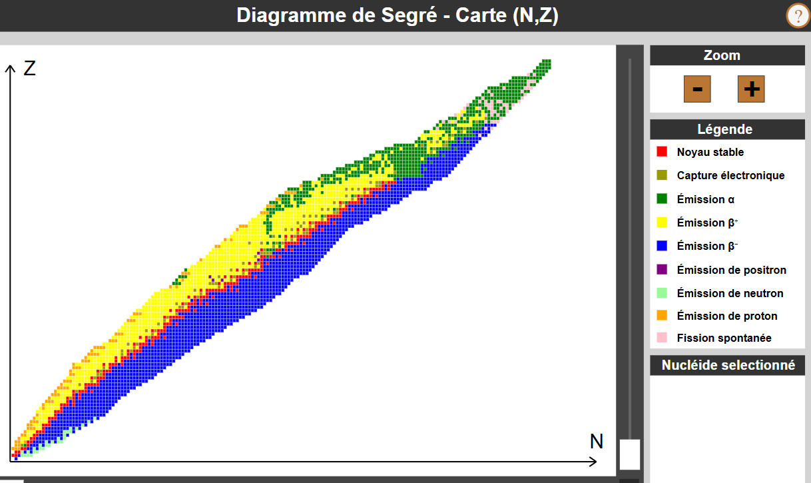

Thème : Constitution et transformations de la matière · C. Poirault-Gauvin
C'est la grande énergie des particules émises qui a permis de comprendre, dès la découverte de la radioactivité par Becquerel en 1896 puis expliquée par Pierre et Marie Curie, que la radioactivité est un phénomène nucléaire (transformation du noyau) et non chimique.
Pour chaque situation, identifier la nature de la transformation :
| Description | Nature |
|---|---|
| L'eau liquide se transforme en vapeur. | |
| Le fer rouille au contact de l'air humide. | |
| Un noyau de radium se transforme en radon en émettant une particule. | |
| La combustion du méthane produit CO₂ et H₂O. | |
| Un noyau d'uranium absorbe un neutron et se scinde en deux fragments. |
Exemple : 126C, 136C et 146C sont les trois isotopes du carbone. Ils ont tous Z = 6 protons.
Les noyaux suivants sont-ils des isotopes du carbone (Z = 6) ?
| Noyau | Z | A | Isotope du carbone ? |
|---|---|---|---|
| 126C | 6 | 12 | |
| 147N | 7 | 14 | |
| 146C | 6 | 14 | |
| 168O | 8 | 16 |
Le diagramme (N, Z) ou diagramme de Ségré représente les noyaux en fonction de leur nombre de neutrons N (abscisse) et de leur nombre de protons Z (ordonnée). Il indique la nature de l'instabilité de chaque noyau.
Lorsqu'un noyau est instable, il expulse spontanément une particule et émet un rayonnement gamma de grande énergie.

Source : simulation interactive web-labosims.org
Une réaction nucléaire s'accompagne d'une perte de masse (défaut de masse |Δm|) qui se traduit par une libération d'énergie :
avec c = 3,00 × 10⁸ m·s⁻¹ et Δm en kg, E en joules.
Le radium-226 se désintègre en émettant un noyau de radon et une particule. Compléter A et Z du noyau de radon :
22688Ra → Rn + 42He
Vérifier que l'équation suivante respecte les lois de Soddy :
Somme de A à gauche : 1 + 235 =
Somme de A à droite : 94 + 139 + 3 =
Somme de Z à gauche : 0 + 92 =
Somme de Z à droite : 38 + 54 + 0 =
L'équation est-elle équilibrée ?
Simule une réaction en chaîne : chaque fission libère 3 neutrons qui peuvent déclencher d'autres fissions. Ajuste le facteur de multiplication k et observe si la réaction s'emballe, se stabilise ou s'éteint.
📊 État de la réaction
Génération : —
Noyaux fissionnés : —
Énergie (×10⁻¹¹ J) : —
—
La fission d'un noyau d'uranium-235 s'accompagne d'une perte de masse |Δm| = 3,1 × 10⁻²⁸ kg. Calculer l'énergie libérée :
E = |Δm| × c² = 3,1 × 10⁻²⁸ × (3,00 × 10⁸)² = ?
Une autre réaction de fission possible de l'uranium-235 produit du baryum-141 et un noyau inconnu, ainsi que 3 neutrons. Retrouver A, Z et le symbole chimique du noyau manquant en appliquant les lois de conservation.
La fission de l'uranium-235 peut aussi produire du césium-137. Compléter l'équation en trouvant A et Z du noyau manquant, puis identifier l'élément.
En t'appuyant sur le document ci-dessus, réponds aux questions suivantes.
1. L'uranium naturel contient principalement deux isotopes. Lequel est fissile (capable de subir une fission avec un neutron lent) ?
2. L'uranium naturel contient seulement 0,7 % de cet isotope fissile. Quelle opération permet d'augmenter cette proportion pour alimenter une centrale ?
3. Dans le cœur du réacteur, la fission de l'uranium libère de l'énergie sous forme de :
4. Cette énergie est ensuite convertie en électricité grâce à :
5. Les noyaux produits par la fission (Sr, Xe, Kr…) sont radioactifs. Comment appelle-t-on ces déchets ?
L'énergie libérée par notre Soleil provient de réactions de fusion nucléaire. C'est la première réaction pour la création d'hélium dans notre Soleil :
Dans la réaction de fusion ci-dessus, identifier A et Z du noyau de deutérium produit :
11H + 11H → H + 0+1e
En t'appuyant sur le document ci-dessus, réponds aux questions suivantes.
1. Quelle réaction nucléaire se produit au cœur du Soleil durant sa longue phase de vie principale ? Quel élément est consommé ?
2. La fusion de l'hydrogène dans le Soleil produit principalement quel noyau ?
3. Quand l'hydrogène est épuisé au cœur, l'étoile gonfle et devient une :
4. Dans cette phase, l'étoile fusionne maintenant de l'hélium pour produire du carbone-12. Cette réaction de fusion est-elle possible car :
5. Pour une étoile de la masse du Soleil, la phase finale est :
6. Les étoiles massives (> 8 masses solaires) peuvent fusionner des noyaux jusqu'au fer (Z = 26). Pourquoi la fusion s'arrête-t-elle au fer ?
Marie Curie, alors doctorante dans le laboratoire d'Henri Becquerel, a travaillé sur le rayonnement émis par des minerais d'uranium. Elle remarque avec son mari Pierre qu'après avoir séparé l'uranium de toutes les impuretés, celles-ci émettaient encore un rayonnement plus intense que celui de l'uranium isolé. Plus tard, ils identifieront deux éléments responsables de ce rayonnement : le radium et le polonium.
Représenter sous forme de schéma la chaîne radioactive allant du radium au polonium. On notera AZX le noyau intermédiaire. Compléter A et Z de ce noyau :
À l'aide des lois de conservation, identifier la nature de la première désintégration (Ra → X) :
Données : Ra → A=226, Z=88 | X → A=222, Z=86 (trouvé question 1)
Variation du nombre de masse : ΔA = 226 − 222 =
Variation du numéro atomique : ΔZ = 88 − 86 =
La particule émise est un noyau d'hélium-4 (42He) : la première désintégration est donc aussi de type :
Rédiger en quelques lignes : quel est le noyau intermédiaire X, quelle est la nature des deux désintégrations, quelles lois a-t-on utilisées ?
e-profs · 2 min 35
Paul Olivier · 5 min 42
Paul Olivier · 3 min 09
Autorité de sûreté nucléaire et de radioprotection · 9 min 50
PCCL · 8 min 27
CEA · 17 min 28
PCCL · 7 min 30
web-labosims.org.
CEA · PDF.
iter.org.
Hatier-clic.